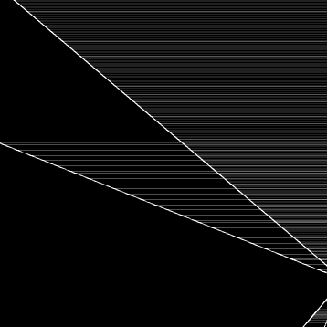

Drawing
drawing.js is a small (~50kb) graphics library I'm developing for use in simple 2D demos. Everything from polygons, to circles, to letters are composed of just 2 things: lines and bezier curves.
Preprocessing
Even though every shape can be easily composed of lines and curves (known as a path), converting them to actual pixels on a screen requires quite a bit of preprocessing and math.
AABB-OBB Overlap
The fastest raster algorithm is one that doesn't draw anything, so our first step when drawing a path is an AABB-OBB overlap test. For this, we draw a box around our path and then apply our transforms to it. If the transformed box doesn't overlap the image, then we can skip drawing the path entirely.
My algorithm below performs this test in constant time and with no divisions. I'm guessing I'm not the first to come up with it but, when doing research, everyone else was doing much more complicated polygon overlap tests like SAT.
Curve Segmenting
The cubic bezier curves we use are represented as cubic polynomials. This makes determining what pixels they overlap computationally expensive. Instead, the curves are decomposed into lines immediately before rasterization. This conversion ends up being faster and simpler than working with the equation directly.
We want to minimize the number of lines approximating the curve, but also be accurate. To do this, we take the line between the first and last points (p0 and p3) and measure the distance to the control points (p1 and p2). If the distance is too great, we split the curve in half and try again with the two subcurves. It looks like this in action:
When we're done, we draw the lines between p0 and p3 for all of the subcurves.
Notice that the curvier parts get subdivided more. The distance measurements need to be structured carefully to handle curves that are linear or have degenerate coordinates, but it's not terribly difficult. This is how drawing.js does it:
Also, similar to LOD, we can stop dividing parts of the curve outside of the image.
Inside-Outside
Paths may be created in clockwise or counter-clockwise order. Even if they're created in a specific order, a transform can change it. This causes a problem when calculating areas later, as the areas can become negative.
To handle this, we simply calculate the signed area of the entire path after transforming. If the total area is negative, then we just negate all of the area calculations later.
Lines
Now that the path has been turned into lines, we are going to fill the path by looking at the signed area to the right of each line. There are other ways or we could choose to find the area, but this is the one I settled on.
Due to how the math works out, the direction of the lines will cause half of them to have negative area. This combination of positive and negative areas is what determines how much to fill each pixel.
Strides
A stride is the core concept that drawing.js's filling function is built around. The idea is that along a row of pixels, we only need to look at the first and last pixels of the line to be able to fill every other pixel.
No matter how long the line is, the mid sections always increase the area by 2*slope of the line. It's only at the first and last pixels that this differs. This gives us an easy form to calculate the running area of the line: let areadx1 be 2*slope, and let areadx2 be any single-instance pixel changes.
If we have multiple lines, then we just add on to these constants as we process them.
Scheduling
A typical path will get broken down into several hundred small lines, and checking if every line overlaps a pixel will be extremely slow. Luckily there's an easy way to track which lines are next.
For each line, drawing.js will track the first pixel of the line in each row and add it to a binary heap, which is only a log2(n) operation. We can then look at the top of the heap to see which line to process next.
Once we hit a line's first pixel in a row, we just modify area, areadx1, and areadx2 and then ignore the line until its last pixel in the row.
Large Numbers
This wouldn't normally need a section, but it's a problem I ran into after development and took a bit to figure out.
If a line spanned multiple rows, the equations to calculate the left and right-most pixel coordinates on that row looked something like this:
This worked perfectly well for almost all coordinates, but if the line coordinates were very large (close to floating point saturation) this could happen:
The exact problem is intricate, but basically the start and end pixels (x0 and x1) would be calculated improperly and prevent the algorithm from setting the area to 0.
The fix ended up being to base all of the coordinate calculations around one fixed point on the row. It's less accurate, but because everything is less accurate together, it ends up looking better. It has the bonus of being simpler too:
These same problems can occur when dividing by small numbers - usually when calculating areas or calculating where a line crosses a pixel boundary. It took me 8 versions to find formulas that were both stable and efficient.
Blending
At this point we have a color and an area between 0 and 1, and the question is how to blend it with a background pixel. For this we'll be using alpha compositing.
The typical compositing equations look like this:
This is bad news since it involves 3 multiplies and several int/float conversions for every single pixel. Luckily, the image RGBA values will usually be stored as a 32 bit integer. With some bit twiddling hacks we can calculate the RGBA values simultaneously and composite several times faster:
I've tried other versions that involve a satanic mix between floating and integer values, but this has remained the fastest version so far.
Notes
Getting SVG rendering working has been a long time coming for me. Previously I had written several functions to draw specific anti-aliased shapes, which amounted to about 300kb across different versions and optimizations. drawing.js comes out to only 50kb while doing way more, so I'm very happy with it.
One thing I didn't mention was my webassembly attempts. After a lot of trial and error, I found that WASM could only get me a ~30% speed improvement at the cost of a really complicated rasterizing function. One thing I've never seen mentioned with WASM is just how much of a pain dealing with the sandboxed memory can be, as I still had to have the JS present as a fallback.
An honorable mention goes to yqnn for his editor. It's a very straightforward web-based SVG editor, and I've gone back to it several times for my own designs.